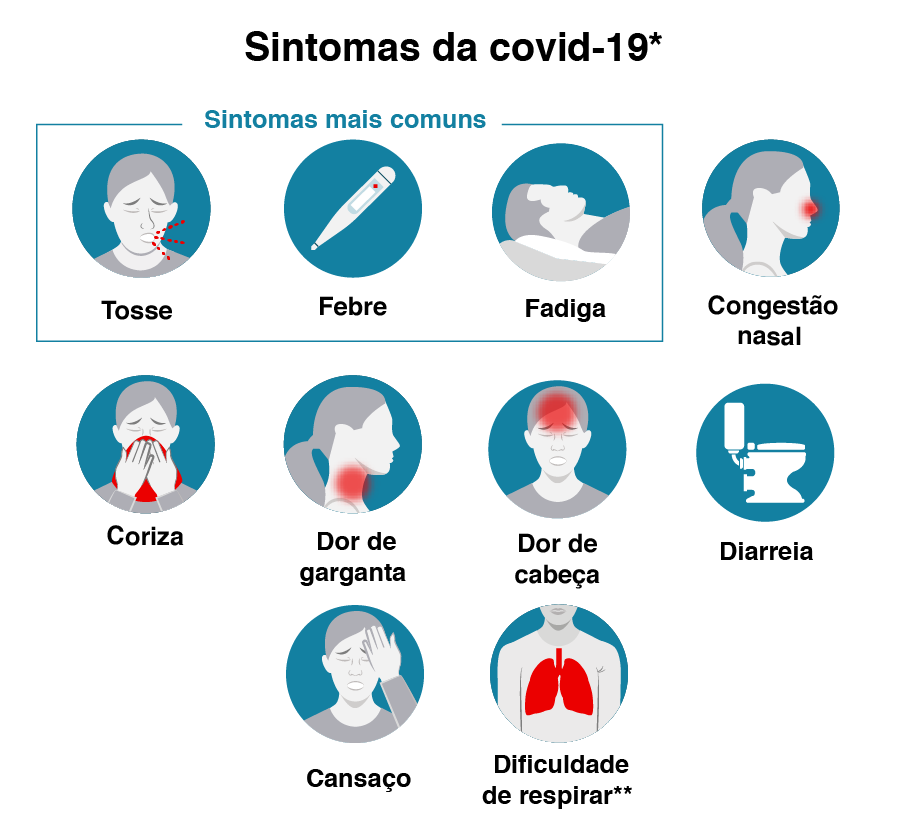
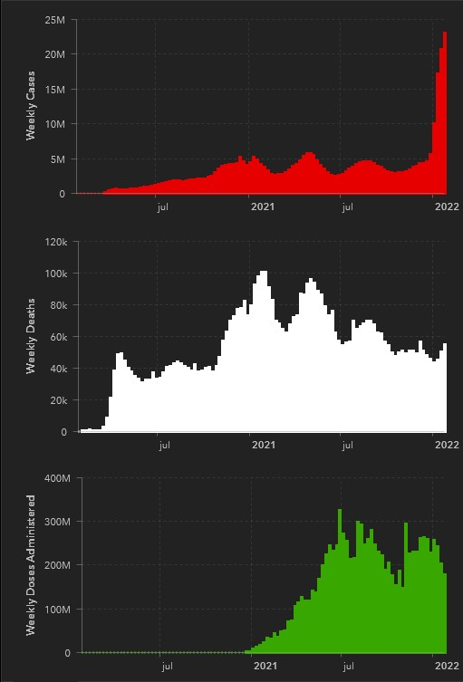
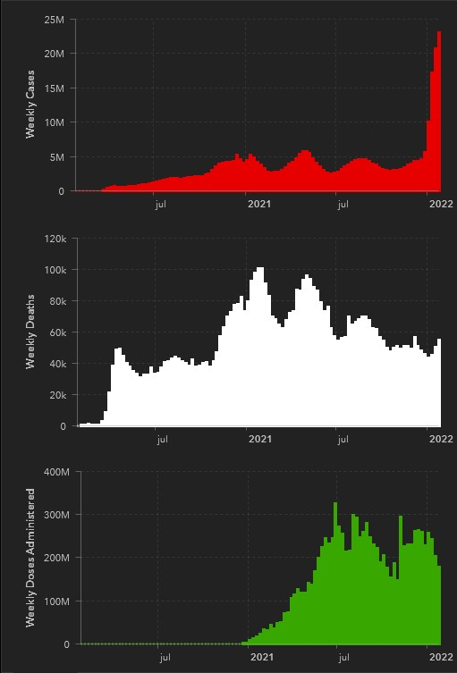

A COVID-19 é uma doença causada pelo coronavírus da síndrome respiratória aguda grave (SARS-CoV-2).
O primeiro caso observado da doença foi relatado em dezembro de 2019 em Wuhan, na China.
Em
20 de janeiro de 2020,
a Organização Mundial da Saúde (OMS) classificou o surto como Emergência de Saúde Pública de Âmbito
Internacional e,
em 11 de março de 2020, como pandemia.
Seus principais sintomas são:
- Febre
- Cansaço
- Tosse seca
- Perda de paladar ou olfato
- Congestão nasal
- Conjutivite
- Dor de garaganta
- Dor de cabeça
- Dor no corpo
- Erupção cutanea
- Náusea ou vomito
- Diarreia
- Calafrios e tonturas
Em 26 de novembro de 2021, a OMS informou que a variante B.1.1.529 (denominada Ômicron) é uma variante de preocupação a qual contém diversas mutações. As outras variantes de preocupação ainda estão em circulação e são: Alfa, Beta, Gama e Delta.
 
